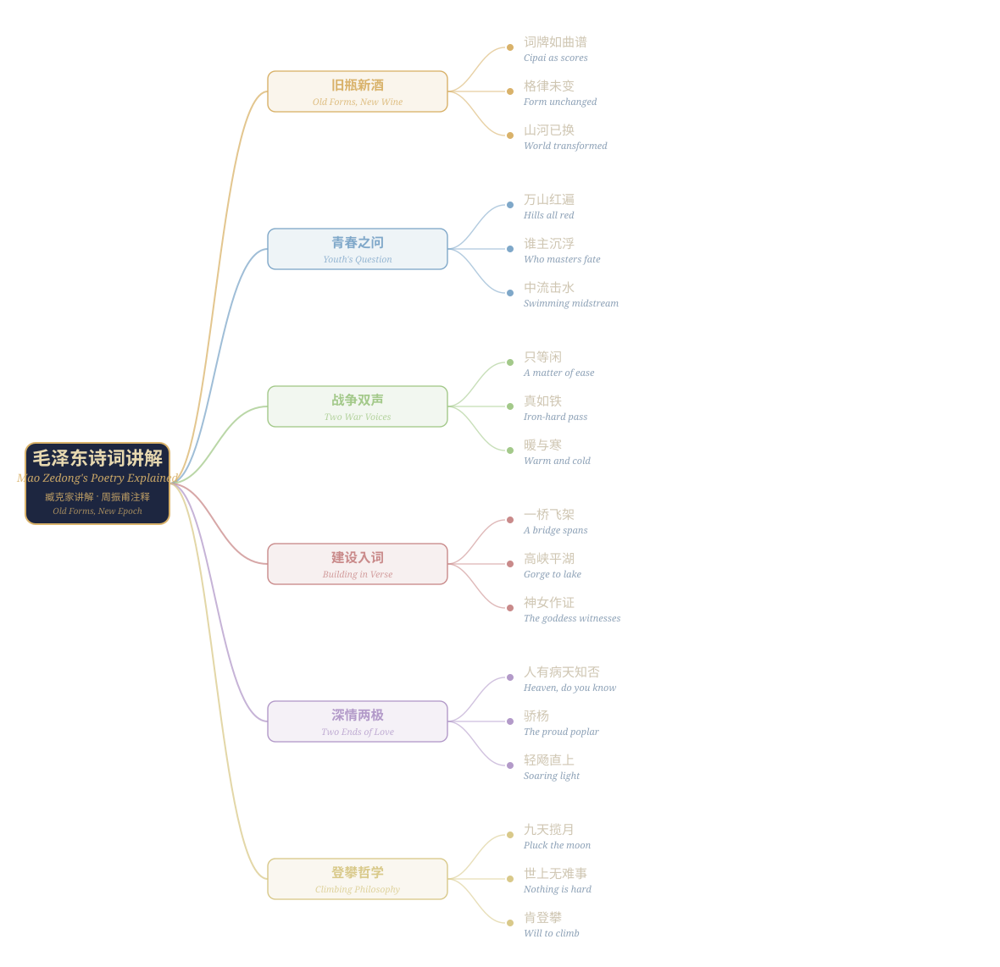

毛泽东诗词讲解
〇 · 书籍信息
基本信息
| 书名 | 「诗词讲解」的分工写在扉页——臧克家负责讲解（诗人的诗话式解读），周振甫负责注释（版本、典故、本事）——1996 年后记交代成书史：「把周振甫以前起草的 8 首诗词的注也加入……又补写了 12 首诗词的讲解」——讲解与注释互相成全 |
|---|---|
| 注者 | 周振甫——中华书局编辑大家、《管锥编》的整理者：注毛泽东诗词，从「词牌好比曲谱，每首词牌都有一定的格律」讲起——为普通读者扫清字词与本事 |
| 讲述对象 | 「中国青年出版社认为克家同志的讲解，对青年阅读毛泽东同志的诗词有帮助」——写给青年的读本：每首诗后附发表史（「这首词最早发表在 1978 年 9 月 9 日《人民日报》」）——版本意识做成了学术的底色 |
| 一句话 | 从「恰同学少年，风华正茂」到「可上九天揽月」，半个世纪的诗词是一部用旧体格律写就的现代史——诗与革命互相注解：格律装着山河，山河改着格律。 |
一 · 核心主题总览
这本讲解集里的四组母题：① 旧格律装新时代
周振甫的注释首先立起形式观：「词牌好比曲谱，每首词牌都有一定的格律。最早的词牌往往是词的题目，后来填词，只用那个词牌的格律来写词，内容和词牌无关」——毛泽东用《沁园春》写长沙秋景与革命怀抱，用《菩萨蛮》写黄鹤楼，用《水调歌头》写长江大桥——最旧的瓶子装最新的酒：格律未变，山河已换。
② 山河与怀抱
青年篇的代表作《沁园春·长沙》：「独立寒秋，湘江北去，橘子洲头。看万山红遍，层林尽染」——「问苍茫大地，谁主沉浮？」——一问定全篇：风景的辽阔直接换成抱负的辽阔；到《沁园春·雪》，同样的结构更高的海拔：「江山如此多娇，引无数英雄竞折腰」「数风流人物，还看今朝」——两首《沁园春》互为镜像：一首问天下谁主，一首答英雄何在。
③ 战争诗学
战地诗词自成一路：《七律·长征》「红军不怕远征难，万水千山只等闲。五岭逶迤腾细浪，乌蒙磅礴走泥丸」——把万水千山写成「细浪」「泥丸」的缩尺术；《忆秦娥·娄山关》则全然另一种笔：「西风烈，长空雁叫霜晨月……雄关漫道真如铁，而今迈步从头越」——同样写征途，一收一放：等闲是宣传的豪迈，如铁是深夜的诚实——两种笔法并存，才是完整的战争诗学。
④ 深情与超越
私情感在词里反复回访：《蝶恋花·答李淑一》为亡妻与战友而作：「我失骄杨君失柳，杨柳轻飏直上重霄九」——注者从李淑一 1957 年来信写到和词始末：「1957 年……信告诉毛泽东同志，并附上《菩萨蛮·惊梦》。5 月 11 日毛泽东同志写了这」首词——悼亡之情被写成「轻飏直上」的神话：私情升华为超越；《贺新郎》的「汽笛一声肠已断，从此天涯孤旅」则是同一种深情的年轻版本。
二 · 第一段 早期 —— 离别与登楼—— 贺新郎 · 长沙 · 黄鹤楼 ——
贺新郎：汽笛与肠断
1923 年的《贺新郎》是全集最柔软的一首：「挥手从兹去。更那堪凄然相向，苦情重诉。眼角眉梢都似恨，热泪欲零还住」——离别写足了克制：「热泪欲零还住」，泪要落又忍住；上片结尾连问：「算人间知己吾和汝。人有病，天知否？」下片陡然放开：「凭割断愁丝恨缕。要似昆仑崩绝壁。又恰像台风扫环字。重比翼，和云翥」——从私情一举跃入天地意象：离别词的豪放化改造，在此完成第一次试笔。
◆ 语言学习 · 概念 · 本事注
| 杨开慧 | 「1901—1930……1930 年红军退出长沙后，被反动派何键杀害」 |
|---|---|
| 热泪欲零还住 | 克制的写法：泪未落，情已满 |
| 昆仑崩绝壁 | 比喻的尺度跳变：私情被天地意象接走 |
| 一九二三年 | 「这年 6 月，中国共产党第三次全国代表大会在广州召开」 |
句型 ｜ 「人有病，天知否？」——开卷最私的一问：「病」是离愁的总名——伟人的词以「人」自称的时刻不多，这一问让全集有了体温。
长沙：谁主沉浮
《沁园春·长沙》是青春的总纲：「独立寒秋，湘江北去，橘子洲头。看万山红遍，层林尽染；漫江碧透，百舸争流」——写景四句全是动词的展览（看、染、透、争），然后急转：「怅寥廓，问苍茫大地，谁主沉浮？」——「恰同学少年，风华正茂；书生意气，挥斥方遒。指点江山，激扬文字，粪土当年万户侯」——上片问天地，下片答自己：谁主沉浮？「曾记否，到中流击水，浪遏飞舟？」——问句结尾，答案藏在回忆里。
◆ 语言学习 · 概念 · 设问结构
| 万山红遍 | 秋景的底色：层林尽染的动词展览 |
|---|---|
| 谁主沉浮 | 一问定篇：风景换抱负 |
| 书生意气 | 自画像：挥斥方遒的少年 |
| 中流击水 | 回忆式回答：答案藏在旧事里 |
句型 ｜ 「问苍茫大地，谁主沉浮？」——全词的枢轴：风景写到极致时抛出主语之问——写景的尽头是问权：谁的青春在回答这个问题，谁的词就有重量。
三 · 第二段 战争篇 —— 等闲与如铁—— 长征 · 娄山关 · 沁园春·雪 ——
长征的缩尺术
《七律·长征》是缩尺术的教科书：「红军不怕远征难，万水千山只等闲。五岭逶迤腾细浪，乌蒙磅礴走泥丸」——五岭与乌蒙，从地理实体缩成「细浪」「泥丸」；「金沙水拍云崖暖，大渡桥横铁索寒」——一个「暖」一个「寒」，把渡金沙的喜悦与夺泸定的惨烈压进两个温度字——结尾「更喜岷山千里雪，三军过后尽开颜」——征途的史诗被写成一张「等闲」的脸：豪迈是修辞，也是意志的技术。
◆ 语言学习 · 概念 · 缩尺
| 只等闲 | 开篇的定调：万水千山的心理缩尺 |
|---|---|
| 细浪泥丸 | 地理的比喻缩尺：山成浪、山成丸 |
| 暖与寒 | 温度的史笔：金沙之喜、铁索之烈 |
| 尽开颜 | 苦旅的收尾：雪也要「更喜」 |
句型 ｜ 「红军不怕远征难，万水千山只等闲。」——战争诗的宣言体：「怕」字被否定句钉住——修辞即意志：先说等闲，再让五岭乌蒙排队来证明。
娄山关的另一种笔
《忆秦娥·娄山关》给战争诗另一种声部：「西风烈，长空雁叫霜晨月。霜晨月，马蹄声碎，喇叭声咽」——全部是声音与温度的写法：烈、碎、咽；「雄关漫道真如铁，而今迈步从头越。从头越，苍山如海，残阳如血」——「如海」「如血」两个比喻收束，苍凉入骨——同一支军队，在《长征》里等闲，在《娄山关》里如铁——两首对读，才知道豪迈的另一面是深夜的诚实。
◆ 语言学习 · 概念 · 声景
| 西风烈 | 开篇一个字定调：声音先于画面 |
|---|---|
| 马蹄碎喇叭咽 | 战争的声音特写 |
| 从头越 | 复沓的一句：再来的决心 |
| 苍山如海残阳如血 | 词史最著名的对句：苍凉收束 |
习语 ｜ 「雄关漫道真如铁，而今迈步从头越。」——最常被引用的哲学化一句：难关与从头：承认「如铁」才配谈「迈步」——豪迈的完整版包含对难度的诚实。
四 · 第三段 建设与超越 —— 游泳 · 揽月 · 悼亡—— 万里长江 · 九天揽月 · 杨柳轻飏 ——
水调歌头：长江的蓝图
《水调歌头·游泳》把建设写进词里：「才饮长沙水，又食武昌鱼。万里长江横渡，极目楚天舒」——「一桥飞架南北，天堑变通途。更立西江石壁，截断巫山云雨，高峡出平湖」——1956 年的武汉长江大桥与还在蓝图上的三峡：词预言了半世纪后的现实；「神女应无恙，当惊世界殊」——让神话人物来当见证人：建设的自豪需要一位古代的旁观者来兑现。
◆ 语言学习 · 概念 · 预言诗
| 一桥飞架 | 武汉长江大桥：1957 年通车 |
|---|---|
| 高峡出平湖 | 三峡蓝图：半个世纪后兑现 |
| 天堑变通途 | 工程的宣言：地理障碍的诗意否定 |
| 当惊世界殊 | 神女作证：古今对望的修辞 |
句型 ｜ 「更立西江石壁，截断巫山云雨，高峡出平湖。」——蓝图入词的标本：尚未存在的工程被写成既成事实——诗的时态可以领先于现实的时态。
揽月与轻飏
晚年的两首把超越写到天上：《水调歌头·重上井冈山》「可上九天揽月，可下五洋捉鳖，谈笑凯歌还。世上无难事，只要肯登攀」；《蝶恋花·答李淑一》则把悼亡写成神话：「我失骄杨君失柳，杨柳轻飏直上重霄九。问讯吴刚何所有，吴刚捧出桂花酒」——注者从本事讲起：「李淑一……信告诉毛泽东同志，并附上《菩萨蛮·惊梦》。5 月 11 日毛泽东同志写了这」首和词——私情以「轻飏」收束：最重的情感用最轻的动词——全集的终章逻辑：从「人有病，天知否」到「杨柳轻飏直上重霄九」，深情始终在，只是找到了越来越大的容器。
◆ 语言学习 · 概念 · 轻与重
| 九天揽月 | 宇宙尺度的志向：登攀哲学 |
|---|---|
| 骄杨 | 「我失骄杨」：亡妻的称谓 |
| 轻飏直上 | 悼亡的轻化：升腾代替哀恸 |
| 吴刚桂花酒 | 神话的接待：月宫慰问团 |
习语 ｜ 「世上无难事，只要肯登攀。」——全集最朴素的一句：把「九天揽月」的浪漫落到「登攀」的动作上——豪迈词的底座永远是动词：肯登攀，才有资格谈揽月。
五 · 人物图鉴与成长弧线—— 主角配角 · 一张表看穿 ——
主要人物
毛泽东——全集作者——从 1923《贺新郎》到 1960s 的《水调歌头》：用旧体格律写就的半个世纪编年——「恰同学少年」到「可上九天揽月」
臧克家——讲解者——诗人讲诗人：负责艺术分析——「克家同志的讲解，对青年阅读毛泽东同志的诗词有帮助」
周振甫——注释者——「嘱周振甫补注新增的 17 首诗词，对原来的注释也作了相应的修改」：版本与本事的家底
杨开慧——早期的抒情对象——《贺新郎》的收信人、《蝶恋花》的「骄杨」：全集私情的两极
次要人物（功能位）
| 李淑一 | 和词的引信——1957 年来信附《菩萨蛮·惊梦》：催生《蝶恋花·答李淑一》 |
|---|---|
| 柳直荀 | 「君失柳」——李淑一之夫、革命烈士：与「骄杨」并题 |
| 神女 | 被请来作证的神话人物——「神女应无恙，当惊世界殊」：建设的旁观者 |
| 吴刚 | 月宫的接待员——「吴刚捧出桂花酒」：悼亡词的神话排场 |
六 · 主题与象征—— 每个道具都在说话 ——
| 词牌 ↔ 格律 | 形式观——「词牌好比曲谱」：内容早已更新，格律照旧——旧瓶装新酒的写作学 |
|---|---|
| 细浪泥丸 ↔ 缩尺 | 战争修辞——五岭成浪、乌蒙成丸：等闲是心理技术 |
| 暖与寒 ↔ 史笔 | 温度叙事——金沙「暖」、铁索「寒」：两个温度字压一场战役 |
| 高峡平湖 ↔ 预言 | 建设入词——蓝图写成事实：诗的时态领先现实 |
| 轻飏 ↔ 悼亡 | 情感的容器——最重的情用最轻的动词：深情找到了越来越大的容器 |
七 · 写作手法赏析—— 怎么写，就能怎么学 ——
① 讲解注释双轨
臧克家讲艺术、周振甫注本事——诗人之眼＋学者之注：分工明确互不越界
② 发表史随文
「最早发表在 1978 年 9 月 9 日《人民日报》」——每首注明出处：版本意识做成学术底色
③ 本事交代
杨开慧、李淑一、长沙会议逐条入注——诗背后的人事全部还原：讲解的第一步是知人论世
④ 对读编排
两首《沁园春》、两副战争笔——同类词并置：结构互证的读法
⑤ 面向青年
中国青年出版社出版——扫清词牌、典故两道门槛：普及本的分寸感
八 · 名段欣赏—— 原文精读 · 逐段赏析 ——
九 · 金句摘录—— 14 条 · 中英对照 · 带出处 ——
"挥手从兹去。更那堪凄然相向，苦情重诉。"—— 《贺新郎》一九二三年
"眼角眉梢都似恨，热泪欲零还住。"—— 《贺新郎》
"算人间知己吾和汝。人有病，天知否？"—— 《贺新郎》
"问苍茫大地，谁主沉浮？"—— 《沁园春·长沙》
"恰同学少年，风华正茂；书生意气，挥斥方遒。"—— 《沁园春·长沙》
"红军不怕远征难，万水千山只等闲。"—— 《七律·长征》
"金沙水拍云崖暖，大渡桥横铁索寒。"—— 《七律·长征》
"雄关漫道真如铁，而今迈步从头越。"—— 《忆秦娥·娄山关》
"苍山如海，残阳如血。"—— 《忆秦娥·娄山关》
"江山如此多娇，引无数英雄竞折腰。"—— 《沁园春·雪》
"数风流人物，还看今朝。"—— 《沁园春·雪》
"一桥飞架南北，天堑变通途。"—— 《水调歌头·游泳》
"神女应无恙，当惊世界殊。"—— 《水调歌头·游泳》
"我失骄杨君失柳，杨柳轻飏直上重霄九。"—— 《蝶恋花·答李淑一》
十 · 拓展阅读—— 原文 · 词条 · 译文 ——
十一 · 个人感悟与心得—— 三点心得 ——
三点感悟
① 形式可以是资产
旧瓶新酒的启示：「内容和词牌无关」——格律是约束也是杠杆：在成熟的形式里装新内容，比另造形式更有效率——写作、产品、制度皆然。
② 豪迈要配上诚实
长征与娄山关的对读：「只等闲」与「真如铁」同出一手——完整的世界观需要两种笔：白天宣传的豪迈，与深夜承认难度的诚实。
③ 问句比答案耐用
「谁主沉浮」的结构学：全词以问句立枢、以回忆作答——好的表达把答案藏进提问：问句留给每个人自己接。
五十余首按年份读下来，它其实是两本书合在一起——一本是注释严格的诗词读本（周振甫的本事与格律），一本是二十世纪的心跳记录（臧克家的讲解背后，是汽笛、寒铁、平湖与轻飏）。「人有病，天知否」开卷，「杨柳轻飏」收卷：深情始终都在，只是这半个世纪，人给自己找到了越来越大的容器。
十二 · 一页速查（复习用）
| 旧瓶新酒 | 词牌如曲谱：格律装新时代 |
|---|---|
| 谁主沉浮 | 问句立枢，回忆作答 |
| 等闲与如铁 | 战争诗的双声部 |
| 诗的时态 | 高峡平湖：蓝图领先现实 |
| 轻飏收重 | 最重的情用最轻的动词 |
十三 · 全书思维导图—— 一图纵览 ——

一图纵览全书骨架 · 中英双语对照 · 手机端可左右滑动查看全图